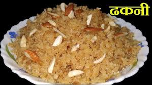

Dhakani Recipe

Ingredients:
- Split red lentils (masoor dal)
- Split black gram (urad dal)
- Rice
- Water
- Salt
- Ghee or oil
- Chopped onions
- Chopped garlic
- Chopped ginger
- Red chili powder
- Turmeric powder
- Garam masala powder
Procedures:
- Rinse the lentils and rice together and soak them in water for at least 4 hours.
- Drain the water and grind the mixture into a smooth paste.
- Heat ghee or oil in a pan and sauté the onions, garlic, and ginger until golden brown.
- Add the red chili powder, turmeric powder, and garam masala powder and sauté for another minute.
- Add the ground lentil and rice mixture to the pan and stir well.
- Cook the mixture until it thickens and the dhakani is ready to serve.
Comments: